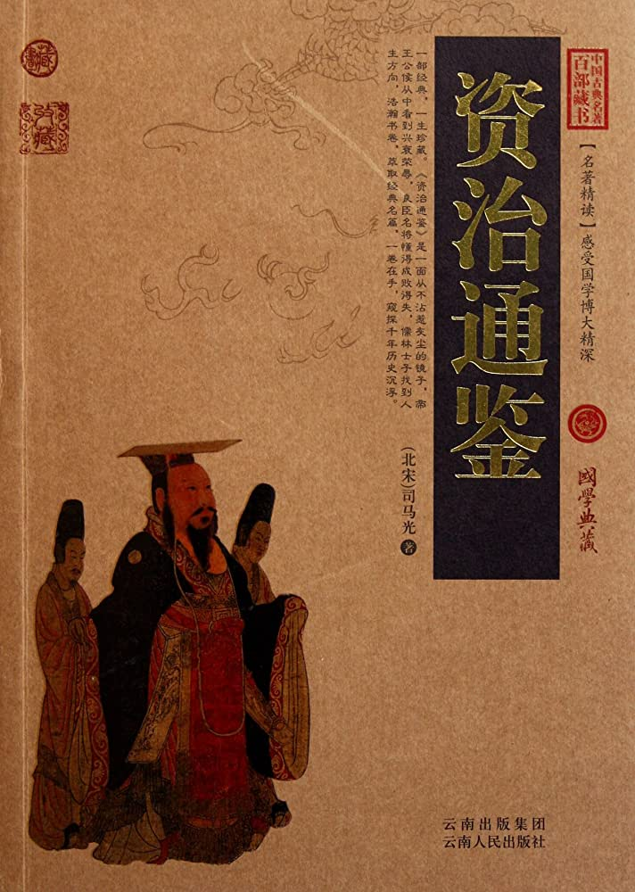

第137卷#

【齐纪三】起上章敦牂，尽玄黓涒滩，凡三年。
世祖武皇帝中永明八年（庚午，公元四九零年）
春，正月，诏放隔城俘二千馀人还魏。
乙丑，魏主如方山；二月，辛未，如灵泉；壬申，还宫。
地豆干频寇魏边，夏，四月，甲戌，魏征西大将军阳平王颐击走之。颐，新城之子也。
甲午，魏遣兼员外散骑常侍邢产等来聘。
五月，己酉，库莫奚寇魏边，安州都将楼龙儿击走之。
秋，七月，辛丑，以会稽太守安陆侯缅为雍州刺史。缅，鸾之弟也。缅留心狱讼，得劫，皆赦遣，许以自新，再犯乃加诛；民畏而爱之。
癸卯，大赦。
丙午，魏主如方山；丙辰，遂如灵泉池；八月，丙寅朔，还宫。
河南王度易侯卒；乙酉，以其世子伏连筹为秦、河二州刺史，遣振武将军丘冠先拜授，且吊之。伏连筹逼冠先使拜，冠先不从，伏连筹推冠先坠崖而死。上厚赐其子雄；敕以丧委绝域，不可复寻，仕进无嫌。
荆州刺史巴东王子响，有勇力，善骑射，好武事，自选带仗左右六十人，皆有胆干；至镇，数于内斋以牛酒犒之。又私作锦袍、绛袄，欲以饷蛮，交易器仗。长史高平刘寅、司马安定席恭穆等连名密启。上敕精检。子响闻台使至不见敕，召寅、恭穆及咨议参军江悆、典签吴修之、魏景渊等诘之，寅等秘而不言；修之曰：“既已降敕，政应方便答塞。”景渊曰：“应先检校。”子响大怒，执寅等八人，于后堂杀之，具以启闻。上欲赦江悆，闻皆已死，怒。壬辰，以随王子隆为荆州刺史。
上欲遣淮南太守戴僧静将兵讨子响，僧静面启曰：“巴东王年少，长史执之太急，忿不思难故耳。天子儿过误杀人，有何大罪！官忽遣军西上，人情惶惧，无所不至。僧静不敢奉敕。”上不答而心善之。乃遣卫尉胡谐之、游击将军尹略、中书舍人茹法亮帅斋仗数百人诣江陵，检捕群小，敕之曰：“子响若束手自归，可全其命。”以平南内史张欣泰为谐之副。欣泰谓谐之曰：“今段之行，胜既无名，负成奇耻。彼凶狡相聚，所以为其用者，或利赏逼威，无由自溃。若顿军夏口，宣示祸福，可不战而擒也。”谐之不从。欣泰，兴世之子也。
谐之等至江津，筑城燕尾洲。子响白服登城，频遣使与相闻，曰：“天下岂有儿反！身不作贼，直是粗疏。今便单舸还阙，受杀人之罪，何筑城见捉邪！”尹略独答曰：“谁将汝反父人共语！”子响唯洒泣；乃杀牛，具酒馔，饷台军，略弃之江流。子响呼茹法亮；法亮疑畏，不肯往。又求见传诏；法亮亦不遣，且执录其使。子响怒，遣所养勇士收集府、州兵二千人，从灵溪西渡；子响自与百馀人操万钧弩，宿江堤上。明日，府、州兵与台军战，子响于堤上发弩射之，台军大败；尹略死，谐之等单艇逃去。
上又遣丹阳尹萧顺之将兵继至，子响即日将白衣左右三十人，乘舴艋沿流赴建康。太子长懋素忌子响，顺之之发建康也，太子密谕顺之，使早为之所，勿令得还。子响见顺之，欲自申明；顺之不许，于射堂缢杀之。
子响临死，启上曰：“臣罪逾山海，分甘斧钺。敕遣谐之等至，竟无宣旨，便建旗入津，对城南岸筑城守。臣累遣书信呼法亮，乞白服相见；法亮终不肯。群小惧怖，遂致攻战，此臣之罪也。臣此月二十五日，束身投军，希还天阙，停宅一月，臣自取尽，可使齐代无杀子之讥，臣免逆父之谤。既不遂心，今便命尽。临启哽塞，知复何陈！”
有司奏绝子响属籍，削爵土，易姓蛸氏；诸所连坐，别下考论。
久之，上游华林园，见一猿透掷悲鸣，问左右，曰：“猿子前日坠崖死。”上思子响，因呜咽流涕。茹法亮颇为上所责怒，萧顺之惭惧，发疾而卒。豫章王嶷表请收葬子响；不许，贬为鱼复侯。
子响之乱，方镇皆启子响为逆，兗州刺史垣荣祖曰：“此非所宜言。正应云：‘刘寅等孤负恩奖，逼迫巴东，使至于此。’”上省之，以荣祖为知言。
台军焚烧江陵府舍，官曹文书，一时荡尽。上以大司马记室南阳乐蔼屡为本州僚佐，引见，问以西事。蔼应对详敏，上悦，用为荆州治中，敕付以修复府州事。蔼缮修廨舍数百区，顷之咸毕，而役不及民，荆部称之。
九月，癸丑，魏太皇太后冯氏殂；高祖勺饮不入口者五日，哀毁过礼。中部曹华阴杨椿谏曰：“陛下荷祖宗之业，临万国之重，岂可同匹夫之节以取僵仆！群下惶灼，莫知所言。且圣人之礼，毁不灭性；纵陛下欲自贤于万代，其若宗庙何！”帝感其言，为之一进粥。
于是诸王公等皆诣阙上表，“请时定兆域，及依汉、魏故事，并太皇太后终制，既葬，公除。”诏曰：“自遭祸罚，慌惚如昨，奉侍梓宫，犹希仿佛。山陵迁厝，所未忍闻。”冬，十月，王公复上表固请，诏曰：“山陵可依典册；衰服之宜，情所未忍。”帝欲亲至陵所，戊辰，诏：“诸常从之具，悉可停之；其武卫之官，防侍如法。”癸酉，葬文明太皇太后于永固陵。甲戌，帝谒陵，王公固请公除。诏曰：“比当别叙在心。”己卯，又谒陵。
庚辰，帝出至思贤门右，与群臣相慰劳。太尉丕等进言曰：“臣等以老朽之年，历奉累圣；国家旧事，颇所知闻。伏惟远祖有大讳之日，唯侍送梓宫者凶服，左右尽皆从吉；四祖三宗，因而无改。陛下以至孝之性，哀毁过礼。伏闻所御三食不满半溢，昼夜不释绖带。臣等叩心绝气，坐不安席。愿少抑至慕之情，奉行先朝旧典。”帝曰：“哀毁常事，岂足关言！朝夕食粥，粗可支任，诸公何足忧怖！祖宗情专武略，未修文教；朕今仰禀圣训，庶习古道，论时比事，又与先世不同。太尉等国老，政之所寄，于典记旧式或所未悉，且可知朕大意。其馀古今丧礼，朕且以所怀别问尚书游明根、高闾等，公可听之。”
帝因谓明根等曰：“圣人制卒哭之礼，授服之变，皆夺情以渐。今则旬日之间，言及即吉，特成伤理。”对曰：“臣等伏寻金册遗旨，逾月而葬，葬而即吉；故于下葬之初，奏练除之事。”帝曰：“朕惟中代所以不遂三年之丧，盖由君上违世，继主初立，君德未流，臣义不洽，故身袭兗冕，行即位之礼。朕诚不德，在位过纪，足令亿兆知有君矣。于此之日而不遂哀慕之心，使情礼俱失，深可痛恨！”高闾曰：“杜预，晋之硕学，论自古天子无有行三年之丧者，以为汉文之制，暗与古合，虽叔世所行，事可承踵。是以臣等忄娄忄娄干请。”帝曰：“窃寻金册之旨，所以夺臣子之心，令早即吉者，虑废绝政事故也。群公所请，其志亦然。朕今仰奉册令，俯顺群心，不敢暗默不言以荒庶政；唯欲衰麻废吉礼，朔望尽哀诚，情在可许，故专欲行之。如杜预之论，于孺慕之君，谅闇之主，盖亦诬矣。”秘书丞李彪曰：“汉明德马后保养章帝，母子之道，无可间然，及后之崩，葬不淹旬，寻已从吉。然汉章不受讥，明德不损名。愿陛下遵金册遗令，割哀从议。”帝曰：“朕所以眷恋衰绖，不从所议者，实情不能忍，岂徒苟免嗤嫌而已哉！今奉终俭素，一已仰遵遗册；但痛慕之心，事系于予，庶圣灵不夺至愿耳。”高闾曰：“陛下既不除服于上，臣等独除服于下，则为臣之道不足。又亲御衰麻，复听朝政，吉凶事杂，臣窃为疑。”帝曰：“先后抚念群下，卿等哀慕，犹不忍除，奈何令朕独忍之于至亲乎！朕今逼于遗册，唯望至期；虽不尽礼，蕴结差申。群臣各以亲疏、贵贱、远近为除服之差，庶几稍近于古，易行于今。”高闾曰：“昔王孙裸葬，士安去棺，其子皆从而不违。今亲奉遗令而有所不从，臣等所以频烦干奏。”李彪曰：“三年不改其父之道，可谓大孝。今不遵册令，恐涉改道之嫌。”帝曰：“王孙、士安皆诲子以俭，及其遵也，岂异今日！改父之道，殆与此殊。纵有所涉，甘受后代之讥，未忍今日之请。”群臣又言：“春秋烝尝，事难废阙。”帝曰：“自先朝以来，恒有司行事；朕赖蒙慈训，常亲致敬。今昊天降罚，人神丧恃，赖宗庙之灵，亦辍歆祀。脱行飨荐，恐乖冥旨。”群臣又言：“古者葬而即吉，不必终礼，此乃二汉所以经纶治道，魏、晋所以纲理庶政也。”帝曰：“既葬即吉，盖季欲多乱，权宜救世耳。二汉之盛，魏、晋之兴，岂由简略丧礼、遗忘仁孝哉！平日之时，公卿每称当今四海晏然，礼乐日新，可以参美唐、虞，比盛夏、商。及至今日，即欲苦夺朕志，使不逾于魏、晋。如此之意，未解所由。”李彪曰：“今虽治化清晏，然江南有未宾之吴，漠北有不臣之虏，是以臣等犹怀不虞之虑。”帝曰：“鲁公带绖从戎，晋侯墨衰败敌，固圣贤所许。如有不虞，虽越紼无嫌，而况衰麻乎！岂可于晏安之辰豫念军旅之事，以废丧纪哉！古人亦有称王者除衰而谅闇终丧者，若不许朕衰服，则当除衰拱默，委政冢宰。二事之中，唯公卿所择。”游明根曰：“渊默不言，则不政将旷；仰顺圣心，请从衰服。”太尉丕曰：“臣与尉元历事五帝，魏家故事，尤讳之后三月，必迎神于西，禳恶于北，具行吉礼，自皇始以来，未之或改。”帝曰：“若能以道事神，不迎自至；苟失仁义，虽迎不来。此乃平日所不当行，况吾丧乎！朕在不言之地，不应如此喋喋；但公卿执夺朕情，遂成往复，追用悲绝。”遂号恸，群官亦哭而辞出。初，太后忌帝英敏，恐不利于己，欲废之，盛寒，闭于空室，绝其食三日；召咸阳王禧，将立之。太尉东阳王丕、尚书右仆射穆泰、尚书李冲固谏，乃止。帝初无憾意，唯深德丕等。泰，崇之玄孙也。
又有宦者谮帝于太后，太后杖帝数十；帝默然受之，不自申理；及太后殂，亦不复追问。
甲申，魏主谒永固陵。辛卯，诏曰：“群官以万机事重，屡求听政。但哀慕缠绵，未堪自力。近侍先掌机衡者，皆谋猷所寄，且可委之；如有疑事，当时与论决。”
交州刺史清河房法乘，专好读书，常属疾不治事，由是长史伏登之得擅权，改易将吏，不令法乘知。录事房季文白之，法乘大怒，系登之于狱十馀日。登之厚赂法乘妹夫崔景叔，得出，因将部曲袭州，执法乘，谓之曰：“使君既有疾，不宜烦劳。”囚之别室。法乘无事，复就登之求书读之，登之曰：“使君静处，犹恐动疾，岂可看书！”遂不与。乃启法乘心疾动，不任视事。十一月，乙卯，以登之为交州刺史。法乘还，至岭而卒。
十二月，己卯，立皇子子建为湘东王。
初，太祖以南方钱少，更欲铸钱。建元末，奉朝请孔觊上言，以为：“食货相通，理势自然。李悝云：‘籴甚贵伤民，甚贱伤农。’甚贱甚贵，其伤一也。三吴，国之关奥，比岁时被水潦而籴不贵，是天下钱少，非谷贱，此不可不察也。铸钱之弊，在轻重屡变。重钱患难用，而难用为累轻；轻钱弊盗铸，而盗铸为祸深。民所以盗铸，严法不能禁者，由上铸钱惜铜爱工也。惜铜爱工者，意谓钱为无用之器，以通交易，务欲令质轻而数多，使省工而易成，不详虑其为患也。夫民之趋利，如水走下。今开其利端，从以重刑，是导其为非而陷之于死，岂为政欤！汉兴，铸轻钱，民巧伪者多。至元狩中，始惩其弊，乃铸五铢钱，周郭其上下，令不可磨取鋊，而民计其费不能相偿，私铸益少，此不惜铜不爱工之效也。王者不患无铜乏工，每令民不能竞，则盗铸绝矣。宋文帝铸四铢，至景和，钱益轻，虽有周郭，而镕冶不精，于是盗铸纷纭而起，不可复禁。此惜铜爱工之验也。凡铸钱，与其不衷，宁重无轻。自汉铸五铢至宋文帝，历五百馀年，制度世有废兴，而不变五铢者明其轻重可法、得货之宜故也。案今钱文率皆五铢，异钱时有耳。自文帝铸四铢，又不禁民翦凿，为祸既博，钟弊于今，岂不悲哉！晋氏不铸钱，后经寇戎水火，耗散沈铄，所失岁多，譬犹磨砻砥砺，不见其损，有时而尽，天下钱何得不竭！钱竭则士、农、工、商皆丧其业，民何以自存！愚以为宜如旧制，大兴镕铸，钱重五铢，一依汉法。若官铸者已布于民，便严断翦凿，轻小破缺无周郭者，悉不得行。官钱细小者，称合铢两，销以为大，利贫良之民，塞奸巧之路。钱货既均，远近若一，百姓乐业，市道无争，衣食滋殖矣。”太祖然之，使诸州郡大市铜炭。会晏驾，事寝。
是岁，益州行事刘悛上言：“蒙山下有严道铜山，旧铸钱处，可以经略。”上从之，遣使入蜀铸钱。顷之，以功费多而止。
自太祖治黄籍，至上，谪巧者戍缘淮各十年，百姓怨望。乃下诏：“自宋升明以前，皆听复注；其有谪役边疆，各许还本；此后有犯，严加翦治。”
长沙威王晃卒。
吏部尚书王晏陈疾自解，上欲以古昌侯鸾代晏领先，手敕问之。晏启曰：“鸾清干有馀；然不谙百氏，恐不可居此职。”上乃止。
以百济王牟大为镇东大将军、百济王。
高车阿伏至罗及穷奇遣使如魏，请为天子讨除蠕蠕，魏主赐以绣袴褶及杂彩百匹。
世祖武皇帝中永明九年（辛未，公元四九一年）
春，正月，辛丑，上祀南郊。
丁卯，魏主始听政于皇信东室。
诏太庙四时之祭：荐宣皇帝，起面饼、鸭隺；孝皇后，笋、鸭卵；高皇帝，肉脍、菹羹；昭皇后，茗、粣、炙鱼：皆所嗜也。上梦太祖谓己：“宋氏诸帝常在太庙从我求食，可别为吾致祠。”乃命豫章王妃庾氏四时祠二帝、二后于清溪故宅。牲牢、服章，皆用家人礼。
臣光曰：“昔屈到嗜芰，屈建去之，以为不可以私欲干国之典，况子为天子，而以庶人之礼祭其父，违礼甚矣！卫成公欲祀相，宁武子犹非之；而况降祀祖考于私室，使庶妇尸之乎！
初，魏主召吐谷浑王伏连筹入朝，伏连筹辞疾不至，辄修洮阳、泥和二城，置戍兵焉。二月，乙亥，魏枹罕镇将长孙百年请击二戍，魏主许之。
散骑常侍裴昭明、散骑侍郎谢竣如魏吊，欲以朝服行事。魏主客曰：“吊有常礼，何得以朱衣入凶庭！”昭明等曰：“受命本朝，不敢辄易。”往返数四，昭明等固执不可。魏主命尚书李冲选学识之士与之言，冲奏遣著作郎上谷成淹。昭明等曰：“魏朝不听使者朝服，出何典礼？”淹曰：“吉凶不相厌。羔裘玄冠不以吊，此童稚所知也。昔季孙如晋，求遭丧之礼以行。今卿自江南远来吊魏，方问出何典礼；行人得失，何其远哉！”昭明曰：“二国之礼，应相准望。齐高皇帝之丧，魏遣李彪来吊，初不素服，齐朝亦不以为疑，何至今日独见要逼！”淹曰：“齐不能行亮阴之礼，逾月即吉。彪奉使之日，齐之君臣，鸣玉盈庭，貂珰曜目。彪不得主人之命，敢独以素服厕其间乎？皇帝仁孝，侔于有虞，执亲之丧，居庐食粥，岂得以此方彼乎？”昭明曰：“三王不同礼，孰能知其得失！”淹曰：“然而虞舜、高宗皆非邪？”昭明、竣相顾而笑曰：“非孝者无亲，何可当也！”乃曰：“使人之来，唯赍袴褶，此既戌服，不可以吊，唯主人裁其吊服！然违本朝之命，返必获罪。”淹曰：“使彼有君子，卿将命得宜，且有厚赏。若无君子，卿出而光国，得罪何妨！自当有良史书之。”乃以衣、臽给昭明等，使服以致命。己丑，引昭明等入见，文武皆哭尽哀。魏主嘉淹之敏，迁侍郎，赐绢百匹。昭明，骃之子也。
始兴简王鉴卒。
三月，甲辰，魏主谒永固陵。夏，四月，癸亥朔，设荐于太和庙。魏主始进蔬食，追感哀哭，终日不饭；侍中冯诞等谏，经宿乃饭。甲子，罢朝夕哭。乙丑，复谒永固陵。
魏自正月不雨，至于癸酉，有司请祈百神，帝曰：“成汤遭旱，以至诚致雨，固不在曲祷山川。今普天丧恃，幽显同哀，何宜四气未周，遽行祀事！唯当责躬以待天遣。”
甲戌，魏员外散骑常侍李彪等来聘，为之置燕设乐。彪辞乐，且曰：“主上孝思罔极，兴坠正失。去三月晦，朝臣始除衰绖，犹以素服从事，是以使臣不敢承奏乐之赐。”朝廷从之。彪凡六奉使，上甚重之。将还，上亲送至琅邪城，命群臣赋诗以宠之。
己卯，魏作明堂，改营太庙。
五月，己亥，魏主更定律令于东明观，亲决疑狱；命李冲议定轻重，润色辞旨，帝执笔书之。李冲忠勤明断，加以慎密，为帝所委，情义无间；旧臣贵戚，莫不心服，中外推之。
乙卯，魏长孙百年攻洮阳、泥和二戍，克之，俘三千馀人。
丙辰，魏初造五辂。
六月，甲戌，以尚书左仆射王奂为雍州刺史。
丁未，魏济阴王郁以贪残赐死。
秋，闰七月，乙丑，魏主谒永固陵。
己卯，魏主诏曰：“烈祖有创业之功。世祖有开拓之德，宜为祖宗，百世不迁。平文之功少于昭成，而庙号太祖，道武之功高于平文，而庙号烈祖，于义未允。朕今奉尊烈祖为太祖，以世祖、显祖为二祧，馀皆以次而迁。”八月，壬辰，又诏议养老及禋于六宗之礼。先是，魏常以正月吉日于朝廷设幕，中置松柏树，设五帝座而祠之。又有探策之祭。帝皆以为非礼，罢之。戊戌，移道坛于桑干之阴，改曰崇虚寺。
乙巳，帝引见群臣，问以“‘禘祫’，王、郑之义，是非安在？”尚书游明根等从郑，中书监高闾等从王。诏：“圜丘、宗庙皆有禘名，从郑：禘祫并为一祭，从王：著之于令。”戊午，又诏：“国家飨祀诸神，凡一千二百馀处；今欲减省群祀，务从简约。”又诏：“明堂、太庙，配祭、配享，于斯备矣。白登、崞山、鸡鸣山庙，唯遣有司行事。冯宣王庙在长安，宜敕雍州以时供祭。”又诏：“先有水火之神四十馀名及城北星神，今圜丘之下既祭风伯、雨师、司中、司命，明堂祭门、户、井、灶、中霤，四十神悉可罢之。”甲寅，诏曰：“近论朝日、夕月，皆欲以二分之日于东、西郊行礼。然月有馀闰，行无常准。若一依分日，或值月于东而行礼于西，序情即理，不可施行。昔秘书监薛谓等以为朝日以朔，夕月以朏。卿等意谓朔朏、二分，何者为是？”尚书游明根等请用朔朏，从之。
丙辰，魏有司上言，求卜祥日。诏曰：“筮日求吉，既乖敬事之志，又违永慕之心；今直用晦日。”九月，丁丑夜，帝宿于庙，帅群臣哭已，帝易服缟冠、革带、黑屦，侍臣易服黑介帻、白绢单衣、革带、乌履，遂哭尽乙夜。戊子晦，帝易祭服，缟冠素纰、白布深衣、麻绳履，侍臣去帻易臽。既祭，出庙，帝立哭。久之，乃还。
冬，十月，魏明堂、太庙成。
庚寅，魏主谒永固陵，毁瘠犹甚。司空穆亮谏曰：“陛下祥练已阕，号慕如始。王者为天地所子，为万民父母，未有子过哀而父母不戚，父母忧而子独悦豫者也。今和气不应，风旱为灾，愿陛下袭轻服，御常膳，銮舆时动，咸秩百神，庶使天人交庆。”诏曰：“孝悌之至，无所不通。今飘风、旱气，皆诚慕未浓，幽显无感也。所言过哀之咎，谅为未衷。”十一月，己未朔，魏主禫于太和庙，兗冕以祭。既而服黑介帻，素纱深衣，拜陵而还。癸亥，冬至，魏主祀圜丘，遂祀明堂，还，至太和庙，乃入。甲子，临太华殿，服通天冠，绛纱袍，以飨群臣。乐县而不作。丁卯，服兗冕，辞太和庙，帅百官奉神主迁于新庙。
乙亥，魏大定官品。戊戌，考诸牧守。
魏假通直散骑常侍李彪等来聘。
魏旧制，群臣季冬朝贺，服袴褶行事，谓之小岁；丙戌，诏罢之。
十二月，壬辰，魏迁社于内城之西。魏以安定王休为太傅，刘郡王简为太保。
高丽王琏卒，寿百馀岁。魏主为之制素委貌，布深衣，举哀于东郊；遣谒者仆射李安上策赠太傅，谥曰康。孙云嗣立。
乙酉，魏主始迎春于东郊。自是四时迎气皆亲之。
初，魏世祖克统万及姑臧，获雅乐器服工人，并存之。其后累朝无留意者，乐工浸尽，音制多亡。高祖始命有司访民间晓音律者，议定雅乐，当时无能知者。然金、石、羽旄之饰，稍壮丽于往时矣。辛亥，诏简置乐官，使修其职，又命中书监高闾参定。
初，晋张斐、杜预共注《律》三十卷，自泰始以来用之。《律》文简约，或一章之中，两家所处，生杀顿异，临时斟酌，吏得为奸。上留心法令，诏狱官详正旧注。七年，尚书删定郎王植集定二注，表奏之。诏公卿、八座参议考正，竟陵王子良总其事；众议异同不能壹者，制旨平决。是岁，书成。廷尉山阴孔稚珪上表，以为：“《律》文虽定，苟用失其平，则法书徒明于帙里，冤魂犹结于狱中。窃寻古之名流，多有法学；今之士子，莫肯为业。纵有习者，世议所轻，将恐此书永沦走吏之手矣。今若置《律》助教，依《五经》例，国子生有欲读者，策试高第，即加擢用，以补内外之官，庶几士流有所劝慕。”诏从其请，事竟不行。
初，林邑王范阳迈，世相承袭，夷人范当根纯攻夺其国，遣使献金簟等物。诏以当根纯为都督缘海诸军事、林邑王。
魏冀州刺史咸阳王禧入朝。有司奏：“冀州民三千人称禧清明有惠政，请世胙冀州。”魏主诏曰：“利建虽古，未必今宜；经野由君，理非下情。”以禧为司州牧、都督司、豫等六州诸军事。
初，魏文明太后宠任宦者略阳苻承祖，官至侍中，知都曹事，赐以不死之诏。太后殂，承祖坐赃应死，魏主原之，削职禁锢于家，仍除悖义将军，封佞浊子，月馀而卒。承祖方用事，亲姻争趋附以求利。其从母杨氏为姚氏妇独否，常谓承祖之母曰：“姊虽有一时之荣，不若妹有无忧之乐。”姊与之衣服，多不受；强与之，则曰：“我夫家世贫，美衣服使人不安。”不得已，或受而埋之。与之奴婢，则曰：“我家无食，不能饲也。”常著弊衣，自执劳苦。承祖遣车迎之，不肯起；强使人抱置车上，则大哭曰：“尔欲杀我！”由是苻氏内外号为“痴姨”。及承祖败，有司执其二姨至殿廷。其一姨伏法。帝见姚氏姨贫弊，特赦之。
李惠之诛也，思皇后之昆弟皆死。惠从弟凤为安乐王长乐主簿，长乐坐不轨，诛，凤亦坐死。凤子安祖等四人逃匿获免，遇赦乃出。既而魏主访舅氏存者，得安祖等，皆封候，加将军。既而引见，谓曰：“卿之先世，再获罪于时。王者设官以待贤才，由外戚而举者，季世之法也。卿等既无异能，且可还家。自今外戚无能者视此。”后又例降爵为伯，去其军号。时人皆以为帝待冯氏太厚，待顾氏太薄；太常高闾尝以为言，帝不听。及世宗尊宠外家，乃以安祖弟兴祖为中山太守，追赠李惠开府仪同三司、中山公，谥曰庄。
世祖武皇帝中永明十年（壬申，公元四九二年）
春，正月，戊午朔，魏主朝飨群臣于太华殿，悬而不乐。
己未，魏主宗祀显祖于明堂以配上帝，遂登灵台以观云物，降居青阳左个，布政事。自是每朔依以为常。
散骑常侍庾荜等聘于魏，魏主使侍郎成淹引荜等于馆南，瞻望行礼。
辛酉，魏始以太祖配南郊。
魏主命群臣议行次。中书监高闾议，以为：“帝王莫不以中原为正统，不以世数为与夺，善恶为是非。故桀、纣至虐，不废夏、商之历；厉、惠至昏，无害周、晋之录。晋承魏为金，赵承晋为水，燕承赵为木，秦承燕为火。秦之既亡，魏乃称制玄朔；且魏之得姓，出于轩辕；臣愚以为宜为土德。”秘书丞李彪、著作郎崔光等议，以为：“神元与晋武往来通好，至于桓、穆，志辅晋室，是则司马祚终于郏鄏，而拓跋受命于云代。昔秦并天下，汉犹比之共工，卒继周为火德；况刘、石、苻氏，地褊世促，魏承其弊，岂可舍晋而为土邪？”司空穆亮等皆请从彪等议。壬戌，诏承晋为水德，神申、腊辰。
甲子，魏罢租课。魏宗室及功臣子孙封王者众，乙丑，诏：“自非烈祖之胄，馀王皆降为公，公降为候，而品如旧。”蛮王桓诞亦降为公；唯上党王长孙观，以其祖有大功，特不降。丹阳王刘昶封齐郡公，加号宋王。
魏旧制，四晨祭庙皆用中节，丙子，始诏用孟月，择日而祭。
以竟陵王子良领尚书令。
魏主毁太华殿，为太极殿。二月，戊子，徙居永乐宫。以尚书李冲领将作大匠，与司空穆亮共营之。
辛卯，魏罢寒食乡飨。
甲午，魏主始朝日于东郊。自是朝日、夕月皆亲之。
丁酉，诏祀尧于平阳，舜于广宁，禹于安邑，周公于洛阳，皆令牧守执事；其宣尼之庙，祀于中书省。丁未，改谥宣尼曰文圣尼父，帝亲行拜祭。魏旧制，气岁祀天于西郊，魏主与公卿从二千馀骑，戎服绕坛，谓之蹹坛。明日，复戎服登坛致祀，已又绕坛，谓之绕天。三月，癸酉，诏尽省之。
辛巳，魏以高丽五云为督辽海渚军事、辽松公、高句丽王，诏云遣其世子入朝。云辞以疾，遣其从叔升于随使者诣平城。
夏，四月，丁亥朔，魏班新律令，大赦。
辛丑，豫章文献王嶷卒，赠假黄钺、都督中外诸军事、丞相，丧礼皆如汉东平献王故事。嶷性仁谨廉俭，不以财贿为事。斋库失火，烧荆州还资，评直三千馀万，主局各杖数十而已。疾笃，遗令诸子曰：“才有优劣，位有通塞，运有贫富，此自然之理，无足以相陵侮也。”上哀痛特甚，久之，语及嶷，犹歔欷流涕。嶷卒之日，第库无见钱，上敕月给嶷第钱百万；终上之世乃省。
五月，己巳，以竟陵王子良为扬州刺史。
魏文明太后之丧，使人告于吐谷浑。吐谷浑王伏连筹拜命不恭，群臣请讨之，魏主不许；又请还其贡物，帝曰：“贡物乃人臣之礼。今而不受，是弃绝之，彼虽欲自新，其路无由矣。”因命归洮阳、泥和之俘。
秋，七月，庚申，吐谷浑遣其世子贺虏头入朝于魏。诏以伏连筹为都督西垂诸军事、西海公、吐谷浑王，遣兼员外散骑常侍张礼使于吐谷浑。伏连筹谓礼曰：“曩者宕昌常自称名而见谓为大王，今忽称仆，又拘执使人；欲使偏师往问，何如？”礼曰：“君与宕昌皆为魏籓，比辄兴兵攻之，殊违臣节。离京师之日，宰辅有言，以为君能自知其过，则籓业可保；若其不悛，祸难将至矣。”伏连筹默然。
甲戌，魏遣兼员外散骑常侍广平宋弁等来聘。及还，魏主问弁：“江南何如？”弁曰：“萧氏父子无大功于天下，既以逆取，不能顺守；政令苛碎，赋役繁重；朝无股肱之臣，野有愁怨之民。其得没身幸矣，非贻厥孙谋之道也。”
八月，乙未，魏以怀朔镇将阳平王颐、镇北大将军陆睿皆为都督，督十二将，步骑十万，分为三道以击柔然：中道出黑山，东道趣士卢河，西道趣侯延河。军过大碛，大破柔然而还。
初，柔然伏名敦可汗与其叔父那盖，分道击高车阿伏至罗，伏名敦屡败，那盖屡胜。国人以那盖为得天助，乃杀伏名敦而立那盖，号候其伏代库者可汗，改元大安。
魏司徒尉元、大鸿胪卿游明根累表请老，魏主许之。引见，赐元玄冠、素衣，明根委貌、青纱单衣，及被服杂物等而遣之。魏主亲养三老、五更于明堂。己酉，诏以元为三老，明根为五更。帝再拜三老，亲袒割牲，执爵而馈；肃拜五更；且乞言焉，元、明根劝以孝友化民。又养国老、庶老于阶下。礼毕，各赐元、明根以步挽车及衣服，禄三老以上公，五更以元卿。
九月，甲寅，魏主序昭穆于明堂，祀文明太后于玄室，辛未，魏主以文明太后再期，哭于永固陵左，终日不辍声，凡二日不食。甲戌，辞陵，还永乐宫。
武兴氐王杨集始寇汉中，至白马。梁州刺史阴智伯遣军主桓卢奴、阴冲昌等击破之，俘斩数千人。集始走还武兴，请降于魏；辛巳，入朝于魏。魏以集始为南秦州刺史、汉中郡侯、武兴王。
冬，十月，甲午，上殷祭太庙。
庚戌，魏以安定王休为大司马，特进冯诞为司徒。诞，熙之子也。
魏太极殿成。
十二月，司徒参军萧琛、范云聘于魏。魏主甚重齐人，亲与谈论。顾谓群臣曰：“江南多好臣。”侍臣李元凯对曰：“江南多好臣，岁一易主；江北无好臣，百年一易主。”魏主甚惭。
上使太子家令沈约撰《宋书》，疑立《袁粲传》，审之于上。上曰：“袁粲自是宋室忠臣。”约又多载宋世祖、太宗诸鄙渎事。上曰：“孝武事迹，不容顿尔。我昔经事明帝，卿可思讳恶之义。”于是多所删除。
是岁，林邑王范阳迈之孙诸农，帅种人攻范当根纯，复得其国。诏以诸农为都督缘海诸军事、林邑王。
魏南阳公郑羲与李冲婚姻，冲引为中书令。出为西兗州刺史，在州贪鄙。文明太后为魏主纳其女为嫔，征为秘书监。及卒，尚书奏谥曰宣。诏曰：“盖棺定谥，激扬清浊。故何曾虽孝，良史载其缪丑；贾充有劳，直士谓之荒公。羲虽宿有文业，而治阙廉清。尚书何乃情遗至公，愆违明典！依《谥法》：‘博闻多见曰文，不勤成名曰灵。’可赠以本官，加谥文灵。”